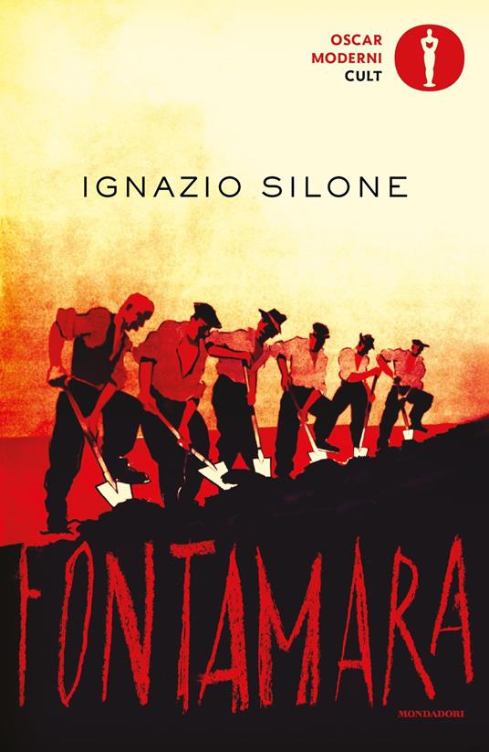
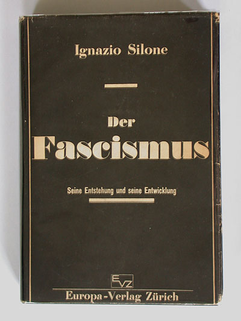
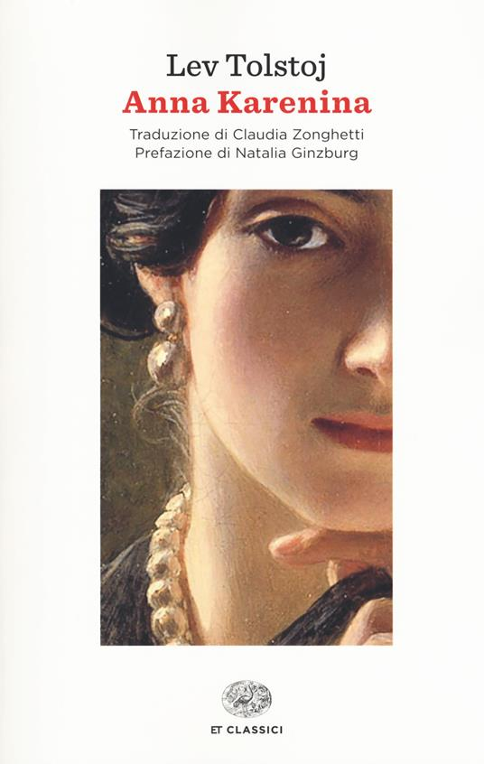
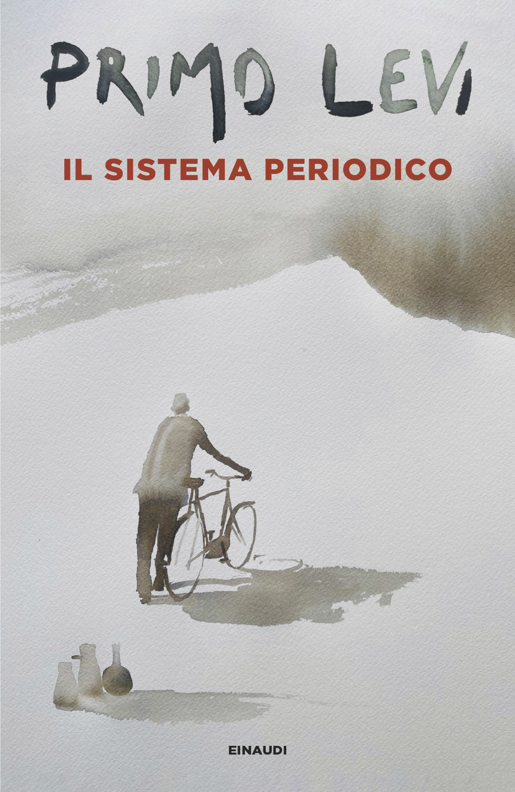
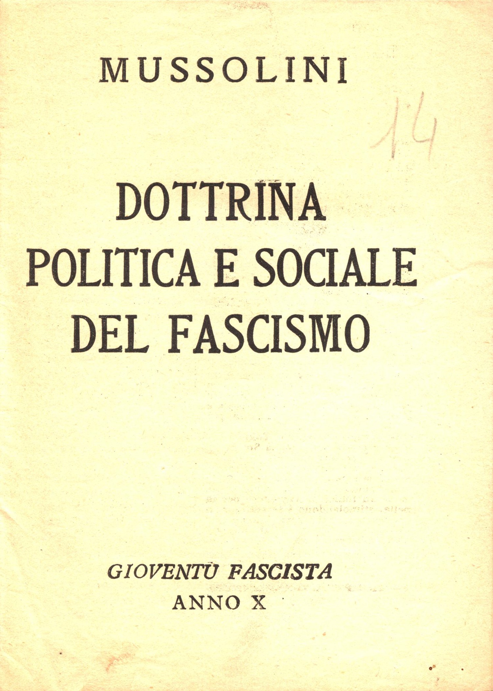

1:08:42 · 13 OPERE
La scuola dei dittatori.
Il filo del discorso
La scuola dei dittatori di Ignazio Silone è presentata come una lettura essenziale per interrogare il rapporto tra potere, consenso e libertà individuale. Il relatore contesta un’immagine scolastica dell’autore limitata a Fontamara e alla questione meridionale, proponendo invece una figura europea di scrittore e oppositore delle dittature. Le valutazioni sulla scarsa attenzione culturale e sulla reperibilità delle edizioni restano sue: la difficoltà di trovare un volume non prova una rimozione organizzata.
Leggi la sintesi completaRiduci la sintesi
La prima pubblicazione della Scuola è del 1938, mentre la versione italiana arriva nel 1962; la storia delle revisioni impone di non attribuire automaticamente ogni frase letta al testo originario. La biografia introduce una riflessione sull’integrità. Silone partecipa alla fondazione del PCd’I, vive l’esilio e si distacca dallo stalinismo: le date richiedono distinguere la maturazione della crisi dall’espulsione del 1931. Fontamara, pubblicato nel 1933, offre al relatore un’immagine della diversità delle persone dentro una condizione comune di povertà, accostata all’incipit di Anna Karenina. Due passi di una lettera sono letti come dichiarazione di responsabilità artistica, ma data e destinatario non sono individuati con sicurezza. Il richiamo al Sistema periodico di Primo Levi collega la singolarità umana alla resistenza all’omologazione. Il nucleo del contributo segue il dialogo satirico fra Mr Doppio Vu, aspirante dittatore, il suo consigliere professor Pickup e l’esule Tommaso il Cinico. Le loro battute non sono tutte dottrina positiva di Silone: l’elogio elitario del controllo è contestato dall’altro personaggio attraverso il ruolo delle lotte popolari. La satira smonta insegne, giustificazioni pubbliche e illusioni del potere; il riferimento alle maschere di Stato non rende Gustav Freytag un autore del Seicento. L’aneddoto su Mussolini, Il Principe e Zarathustra prende di mira una competenza ostentata, mentre il parallelo con la Settima lettera rimane una lettura del relatore. Altri passi riguardano il declino della funzione legislativa, l’amministrazione centralizzata, le abitudini all’obbedienza e i mezzi di comunicazione. Il confronto con Postman rende esplicito il tema dell’intrattenimento e dell’uniformità, ma non sostituisce la collazione delle diverse versioni di Silone. Nel passaggio su suggestione, istruzione e consenso, il relatore applica la lettura al periodo pandemico. Queste applicazioni sono giudizi politici: il testo satirico non dimostra l’inefficacia di una misura sanitaria, non permette diagnosi sulle persone e non decide la legittimità di particolari ordini. Eichmann a Gerusalemme introduce il problema della responsabilità che non scompare dietro l’obbedienza. La successiva allusione ad Anders e a un pilota atomico non identifica un libro; se riguarda Claude Eatherly, il ruolo era ricognizione meteo e non il pilotaggio dell’aereo che sganciò la bomba. Il passo sullo Stato come assoluto corrisponde alla Dottrina del fascismo 1932, ma l’ordinamento repubblicano resta distinto da quella concezione. La conclusione torna alla coscienza individuale, al fallito putsch 1923 e all’acquisizione degli apparati statali: una domanda sul sorgere delle dittature, senza trasformare ogni analogia contemporanea in equivalenza storica accertata.
I libri nel discorso

La scuola dei dittatori
Note sul riferimento
Copertina: Mondadori · Narratori Italiani 102 · prima edizione italiana riveduta, 1962
Fotografia autentica della sovraccoperta illustrata da Franco Francese, edizione Mondadori 1962; estratta senza ricompressione dal PDF del catalogo Pontremoli, pagina 49 del file, pagina 47 stampata. Il 1938 riguarda la precedente versione dell’opera, non l’esemplare fotografato. Il video non identifica questa edizione.
La scuola dei dittatori è nominato esplicitamente a1503s e seguito dalla descrizione dei personaggi. La copia Mondadori è discussa già a195s..: prima 1938, italiana 1962 e successiva storia del testo distinte; non ogni brano moderno datato automaticamente 1938.

Fontamara
Note sul riferimento
Copertina di una successiva edizione italiana: Mondadori, Oscar moderni Cult,2021, ISBN 9788804735007
Edizione italiana 2021, distinta dalla prima pubblicazione tedesca 1933 e dalla copia non identificata usata per il breve passo. Non certificata la tiratura o la grafica della copia del relatore. L’edizione scolastica del catalogo 2012 è un altro ISBN e non è assegnata all’immagine.
Fontamara esplicito, ripreso e letto a 876 s. La prima pubblicazione è 1933, distinta dalla stesura avviata negli anni precedenti e dal 1930 pronunciato.

Der Fascismus. Seine Entstehung und seine Entwicklung (Il fascismo: origini e sviluppo)
Note sul riferimento
Fotografia della sovraccoperta originale dell’edizione tedesca: Europa-Verlag, Zürich,1934; sovraccoperta di Max Bill
Fotografie di prima mano del collezionista Felix Wiedler, con provenienza esplicita. Il video non certifica questa copia materiale. Grafia originale Fascismus conservata; Faschismus è variante moderna presente nelle ricerche. Nessun ISBN assegnato retroattivamente a un volume 1934.
Il fascismo 1934 e titolo tedesco ripreso a 1482–1503 s, deformato nella trascrizione automatica. Originale Der Fascismus.Seine Entstehung und seine Entwicklung verificato nel frontespizio.

Anna Karenina
Note sul riferimento
Copertina di un’edizione italiana dell’opera: Einaudi, ET Classici,2017, traduzione Claudia Zonghetti, ISBN 9788806233877
Edizione 2017 di riferimento, non attestata come quella del relatore. La traduzione dell’incipit ascoltata non è attribuita automaticamente a Zonghetti: il video non nomina il traduttore.
Titolo Anna Karenina e incipit sulle famiglie espliciti, a confronto con un passo di Fontamara. Non certificata influenza testuale né edizione.

Il sistema periodico
Note sul riferimento
Copertina: Einaudi · Einaudi tascabili, Scrittori · 2026
Copertina autentica dell’edizione di riferimento, non attribuita all’esemplare del video.
Primo Levi e Sistema periodico espliciti, riferimento alla diversità rispetto all’omologazione fascista.

Il Gattopardo
Identificazione probabile
Note sul riferimento
Copertina: Feltrinelli · Universale Economica 900 · 2026
Immagine autentica dell’opera, controllata visivamente; l’edizione di riferimento non è attribuita al filmato.
Tomasi di Lampedusa e formula cambiare tutto perché nulla cambi. Titolo non pronunciato: riferimento probabile del Gattopardo dal passo riconoscibile.

Il Principe
Note sul riferimento
Copertina: Feltrinelli · 2013 · a cura di Ugo Dotti
Immagine autentica dell’opera, controllata visivamente; l’edizione di riferimento non è attribuita al filmato.
Il Principe esplicito dentro l’aneddoto satirico su Mussolini e suo padre. La presenza dell’opera non convalida dettagli biografici dell’aneddoto.

Così parlò Zarathustra
Note sul riferimento
Copertina: Adelphi · Piccola Biblioteca Adelphi · riferimento
Immagine associata all’ISBN di riferimento e controllata visivamente; edizione e traduzione non identificate come quelle citate o lette nel video.
Nietzsche e Così parlò Zarathustra espliciti nel passo di Silone sulle pretese filosofiche di Mussolini.

Settima lettera
Note sul riferimento
Copertina: Carocci · Classici · 2020, ristampa 2024 · a cura di Filippo Forcignanò
Immagine autentica dell’opera, controllata visivamente; l’edizione di riferimento non è attribuita al filmato.
Platone e Settima lettera espliciti a proposito di Dionigi. L’attribuzione della lettera è discussa; la scenetta del giorno successivo non è certificata come cronologia letterale.

Divertirsi da morire. Il discorso pubblico nell’era dello spettacolo
Note sul riferimento
Copertina: Luiss University Press · 2021 · prefazione di Matteo Bittanti
Immagine autentica dell’opera, controllata visivamente; non identifica l’edizione usata nel video.
Il titolo inglese Amusing Ourselves to Death e Neil Postman sono espliciti. Il titolo italiano corrisponde alla stessa opera.

La banalità del male. Eichmann a Gerusalemme
Note sul riferimento
Copertina: Feltrinelli · Universale Economica Saggi · 2023
Immagine autentica dell’opera, controllata visivamente; l’edizione di riferimento non è attribuita al filmato.
Eichmann a Gerusalemme esplicito nel discorso sull’obbedienza; riferimento alla Banalità del male, senza libro Anders dedotto dalla successiva allusione atomica.

Costituzione della Repubblica Italiana
Note sul riferimento
Copertina dell’edizione Intra aggiornata al 2023: Intra · 2023 · introduzione di Umberto Vincenti
Copertina autentica del testo integrale, aggiornata alla legge costituzionale 26 settembre 2023 n.1. È successiva al filmato del 2019 e non rappresenta la versione storica letta dal relatore. Umberto Vincenti firma l’introduzione.
Costituzione italiana e giuramento delle forze dell’ordine espliciti. Le conclusioni del relatore sulla legittimità di particolari ordini restano giudizi politici, non istruzioni giuridiche.

La dottrina del fascismo
Identificazione probabile
Note sul riferimento
Copertina originale dell’estratto Dottrina politica e sociale: Gioventù fascista, Anno X[1932], opuscolo Dottrina politica e sociale del fascismo; collezione FAU,15 pagine
Dichiarato estratto originale della seconda parte della dottrina complessiva, quella che contiene il passo citato. Non attribuita a Gentile la firma dell’opuscolo e non confusa l’immagine con la copertina dell’intera voce enciclopedica. I metadati IA riportano erroneamente lingua inglese: la scansione è italiana, come verificato direttamente.
Passo Stato assoluto e individui/gruppi relativo letto, titolo non pronunciato. Identificazione probabile con La dottrina del fascismo 1932, parte II§X; testo originale corrispondente riscontrato.